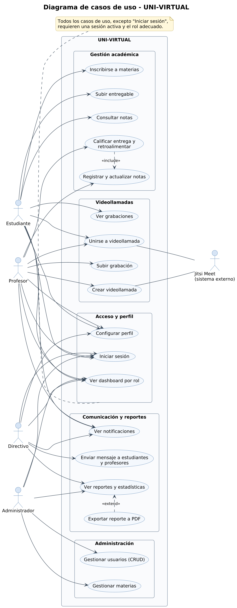

1 · Visión general
Casos de uso
Muestra los cuatro actores y los flujos que el sistema ya cubre: login, dashboards, inscripción, entregas, notas, videollamadas y notificaciones.
“El alcance está delimitado por roles y flujos verificables”.